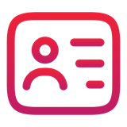

Cheat sheet · Product Owner · 1/2
L'IA à chaque étape du métier
L'IA propose, prépare, rédige. Ce qui est prêt, prioritaire ou engagé, c'est toi qui le dis.
 Parcours POà retenir, module par module
Parcours POà retenir, module par module
- Synthèse de réunion : un avis n'est pas une décision, un « parfois » n'est pas une règle. Chaque point a son repère.
- Fiche prête (DoR) : une documentation a une date, vérifie-la. « Prêt » se coche critère par critère.
- Experts : une question = un sujet, fermée quand une décision est attendue. Note qui tranche.
- Maquette : plusieurs options, un choix humain. Un manque du design system se signale, il ne s'invente pas.
- User stories : un critère se vérifie par un test. Une valeur manquante devient une question.
- Backlog : on ne planifie que ce qui est prêt. L'ordre, et le message qui l'explique, sont à toi.
- Sprint : la capacité se calcule avec les absences et se vérifie à la main. L'engagement, c'est l'équipe.
- Documentation : prévu n'est pas livré. Une page a un propriétaire, une date et un statut.
 Dès demain
Dès demain
- À ta prochaine réunion avec un client, fais structurer la transcription par l'IA, puis relis chaque décision avec son passage.
- Avant de dire qu'une fiche est prête, coche ta DoR toi-même, critère par critère.
 Ce que l'IA fait pour toi
Ce que l'IA fait pour toi
- Structurer une transcription, chaque point relié à son passage.
- Croiser documentation, tickets et cartographie : impacts, contradictions, pages périmées.
- Proposer plusieurs parcours d'écrans, plusieurs ordres de backlog, plusieurs périmètres de sprint.
- Rédiger stories, critères, cas limites, mise à jour de page et note de version.
- Calculer une capacité, chaque étape montrée.
 Avant de coller un vrai document
Avant de coller un vrai document
- Quelle sensibilité ? La classification des données de ton entreprise s'applique.
- Ai-je besoin de ce détail ? Souvent la structure suffit.
- Puis-je anonymiser ?
[CLIENT],[EMAIL],[MONTANT]. - Suis-je dans l'outil autorisé ? Même pour « juste une reformulation ».

Ce qui reste ta décision- Dire « prêt » ou « pas prêt », et ce qui manque : la DoR se coche critère par critère.
- Choisir le parcours d'écrans, et noter pourquoi l'autre est écarté.
- Savoir qui tranche quoi : un expert éclaire, il ne décide pas toujours.
- Décider de l'ordre du backlog, et le motiver.
- Laisser l'équipe s'engager sur le sprint.
Les 5 réflexes de toute demande à l'IA
- Donne le contexte utile, et seulement lui : tout occupe la context window.
- Dis le format et les critères attendus.
- Interdis-lui d'inventer : « non précisé » quand une information manque.
- Vérifie contre les sources, le document ouvert à côté.
- Décide toi-même : prêt, prioritaire, engagé, c'est toi.